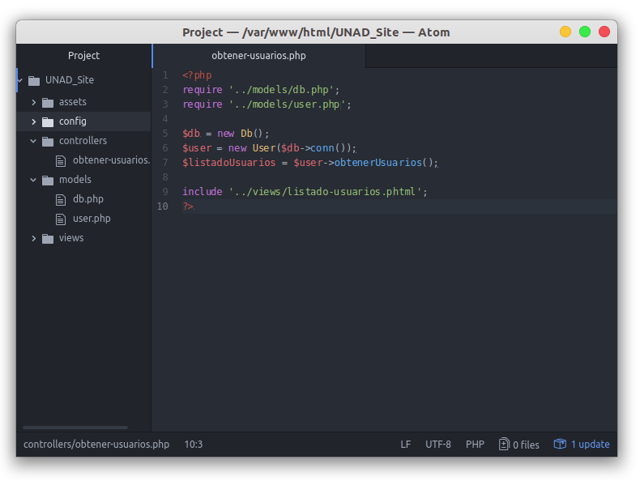

Teniendo la lógica de obtener usuarios dentro de nuestro modelo, vamos a crear el controlador, es decir, el que hará la interación entre modelo y vista, y a su vez (si es necesario), agregará más clases, o hará validaciones extra para la vista.
¿Qué necesitamos?
- Importaremos la clase Db
- Importaremos la clase User
- Enviaremos a la clase User el resultado de la clase Db (¿Recuerdan el return $conn de Db y en el constructor del User el $this->conn = $conn?)
- Llamaremos a la función de User: obtenerUsuarios y asignaremos a una variable el resultado de dicha función.
- Incluiremos la vista designada para el obtener usuarios.
Es muy fácil, una vez que lo lees dices "Ah obvio, cómo no lo pensé antes" si es que creías que era difícil.
En código ésto que acabamos de decir se vería de la siguiente forma:

En este punto, si accedemos a "http://localhost/UNAD_Site/controllers/obtener-usuarios.php" dependiendo de su configuración de PHP puede salirles un error o bien, no salir nada. ¿Por qué?:
- No hemos creado la vista aún.
- No tenemos cómo mostrar nuestra variable $listadoUsuarios que es la que tiene toda la información extraída de la base de datos.
¿Solución? Vamos a crear la vista "listado-usuarios.phtml", ¿pero cuál es esa extensión? ¿phtml? Es una extensión usada cuando explícitamente el código tiene PHP y HTML. Podemos usar .php pero la extensión .phtml va más con el estandar.